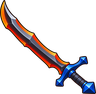

Skeleton
Locations
Drops
| Item | Amount | Chance a kill |
|---|---|---|
| 20 | 25.0% | |
| 40 | 8.3% | |
 Dark Scimitar | 1 | 2.8% |
| Necromancer's robe | 1 | 0.8% |
Taming
Weaken it, stand next to it and choose Tame with a  Monster Treat. Taming 45 is the comfortable level; from Taming 25 it can be tried. See Taming and Beasts.
Monster Treat. Taming 45 is the comfortable level; from Taming 25 it can be tried. See Taming and Beasts.
| Element | Shadow |
|---|---|
| Body | ground |
| Ranch produce | Nothing |
| Moves | Tackle, Hex, Bite, Roar (level 1); Tackle, Hex, Drain Touch, Nightmare (level 12) |